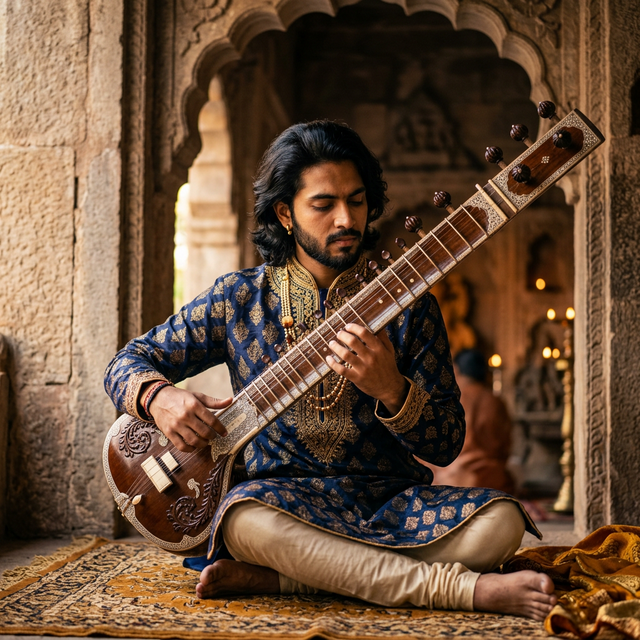
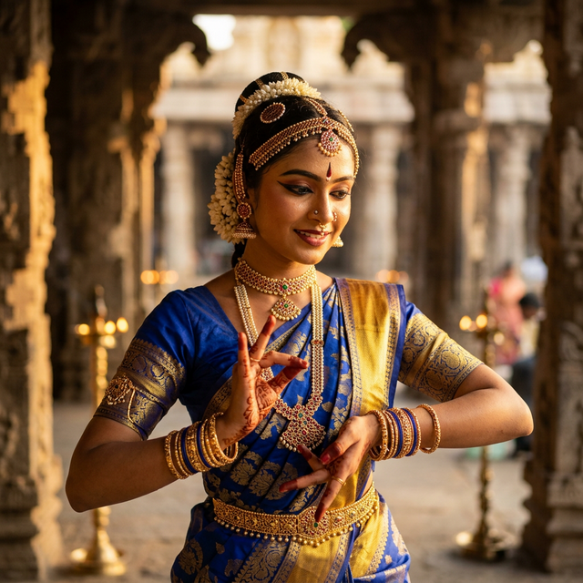
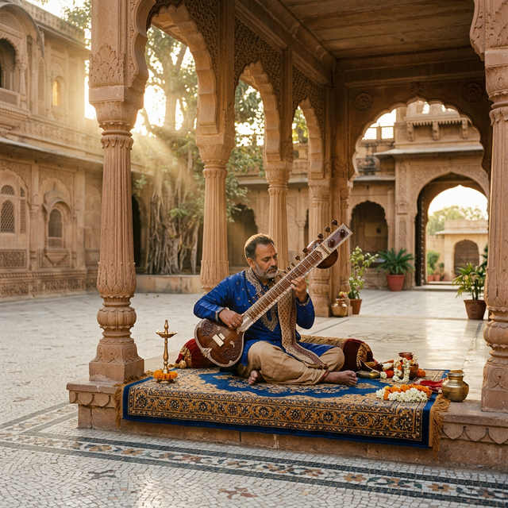

What Our Students Say
Real stories from the hearts of those who have journeyed with us through the world of classical arts.
"Learning Bharatanatyam at Sanskriti has been a transformative experience. It's not just about the steps; it's about finding my inner rhythm and discipline."
"The spiritual depth of Sitar music I discovered here is life-changing. The Gurus are incredibly patient and inspiring mentors."

"Sanskriti feels like family. The support during my Arangetram was overwhelming, and I've grown so much as an artist and a person."

"The Kathak classes here are exceptional. Every mudra and step is taught with such precision and love for the heritage."

"Discovering the nuances of Carnatic music at Sanskriti has been my soul's calling. A truly divine learning environment."
